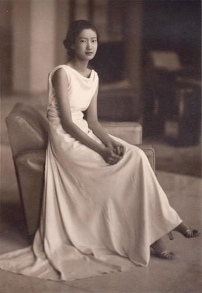

Sinh ra trong một gia đình theo đạo Công giáo từ nhiều đời, Nguyễn Hữu Thị Lan đã được rửa tội và được các cha cố đặt cho cái tên thánh là Marie Thérèse. Sau này, khi cô được gia đình gửi sang Pháp, theo học tại trường dòng Les Oiseaux thì tên cô được rút gọn thành Mariette. Rồi chẳng hiểu từ lúc nào cô có thêm cái tên Jeanne đi kèm Mariette, vì vậy cuối cùng cô có hai tên thánh là Marie Thérèse và Jeanne Mariette. Họ tên cô trong giấy khai sinh quốc tịch Việt Nam là Nguyễn Hữu Thị Lan và họ tên trong giấy tờ quốc tịch Pháp là Marie Thérèse Nguyen Huu Hao hay Jeanne Mariette Thérèse Nguyen Huu Haonhưng viết tắt là Jeanne Mariette Nguyen Huu Hao..
Phụ thân của cô là nhà tỷ phú Nguyễn Hữu Hào, còn gọi là Pierre Nguyễn Hữu Hào, người gốc Gò Công. Thời trai trẻ, mặc dù nhà nghèo nhưng ông là một thanh niên ngoan đạo và có chí hướng. Là người từng được theo học tại Chủng viện Sài Gòn, ông được ông Huyện Sỹ để ý, mến phục và cho kết hôn với bà Lê Thị Bình, con gái thứ của ông và bà Huỳnh Thị Tài.
Bà Bình chào đời tại Tân An khi ông Huyện Sỹ làm thông ngôn tại đó (nay gọi là phiên dịch). Người ta gọi ông là Huyện Sỹ vì thuở nhỏ tên ông là Sỹ, tên thánh là Philippe Lê Phát Sỹ. Về sau, ông theo học ở trường dòng nên đổi tên thành Đạt – Lê Phát Đạt. Quê ông ở Cầu Kho, Sài Gòn. Sau khi du học trở về, ông lấy lại tên cũ của mình và kể từ đó, người ta quen gọi ông là ông Sỹ hoặc ông Huyện Sỹ vì sau khi ra trường, ông làm thông ngôn, về sau được bổ nhiệm làm tham biện và tiếp đến nhận chức huyện hàm. Gọi là chức huyện hàm vì ông là hàm tri huyện chứ không phải là tri huyện tại chức. Ông tham gia Hội đồng Quản hạt Nam Kỳ từ năm 1880. Trong những năm tháng còn là công chức, ông là người có đầu óc tổ chức. Là người mẫn cán, có tài trong công việc lại gặp đúng thời thế: cuộc chinh phục thuộc địa đã quét sạch luật lệ phong kiến; đất đai không còn là của nhà vua; chính quyền thuộc địa cấp lại sổ địa chính, đem bán đất hoang cho những người có tiền với giá cực rẻ vì không thể để ruộng đồng hoang hóa do việc lưu tán khắp nơi của người nông dân vì chiến tranh. Ông Huyện Sỹ nghĩ ngay đến việc dồn tiền đầu tư lớn đất đai ở Sài Gòn,Tân An… đến kinh doanh lúa gạo, cung cấp lương thực không những cho dân mà còn cho cả quân đội thuộc địa. Chẳng bao lâu ông đã làm chủ một vùng đất trải rộng từ phía nam Sài Gòn đến Đồng Tháp Mười. Những vùng đất bùn lầy chẳng mấy chốc đã trở thành những cánh đồng phì nhiêu bát ngát. Còn ở Sài Gòn, Tân An… sau một thời gian, mật độ dân cư đông lên, đất đai trở nên quý hiếm. Ông lời trông thấy và giàu lên nhanh chóng. Từng được học hết bậc tiểu học tại Sài Gòn rồi được gửi sang Pénang (nay là Malaysia), tại Chủng viện nơi đào tạo những tu sĩ cho xứ Đông Dương và các nước vùng Đông Nam Á, hàng ngày học tiếng Latinh, tiếng Bồ Đào Nha và chữ quốc ngữ, ông là người có trình độ, cộng với đầu óc thông minh, biết tính toán, chẳng bao lâu tài sản của ông tăng lên chóng mặt và ông trở thành một trong những đại gia có tên tuổi ở Sài Gòn.
Nghe nói rằng ngôi nhà lầu đồ sộ của gia đình ông Huyện Sỹ tại Tân An, gần ngã ba sông Tân An và Bảo Định, được xây cất trên thế đất hàm rồng nên gia đình ông phất lên nhanh chóng, giàu có và danh vọng nhiều đời.
Người Nam Kỳ từ đầu thế kỷ hai mươi đã truyền miệng nhau câu: “Nhất Sỹ, nhì Phương, tam Xường, tứ Định”. Có nghĩa người giàu nhất Nam Kỳ thời đó là gia đình ông Huyện Sỹ.
Là con gái của ông Huyện Sỹ, Lê Thị Bình cũng là một đại điền chủ cùng với các anh của bà là Lê Phát Thanh, Lê Phát Vĩnh… Anh trai cả của bà là Lê Phát An, còn có tên là Denis Lê Phát An. Ông An và vợ ông là bà Anna Trần Thị Thơ, có thời gian dài sống tại Pháp. Chính ông là người giúp đỡ để Nguyễn Hữu Thị Lan có thể sang Pháp học và sau này ông đã cùng cô Lan đi trên chuyến tàu D’Artagnan của Hãng Messagerie Maritime từ thành phố Marseille – Pháp trở về Việt Nam sau thời gian sáu năm học của cô. Các con của ông Huyện Sỹ làm chủ nhiều đất đai thuộc quận Đức Hòa, Đức Huệ và một phần lớn đất ruộng nay thuộc Đồng Tháp Mười. Phải nói rằng sự giàu có của gia đình ông Huyện Sỹ có thể sánh ngang hàng với gia đình Bạch công tử ở Bạc Liêu.
Chính ông Huyện Sỹ là người bỏ tiền ra xây cất ngôi thánh đường nguy nga ở cuối đường Võ Tánh nay gọi là đường Tôn Thất Tùng, quận 1, thành phố Hồ Chí Minh. Ông và gia đình ông còn cho xây nhà thờ Hạnh Thông Tây ở Gò vấp và nhà thờ Chí Hòa ở đường Cách mạng tháng Tám, quận Tân Bình, dâng cúng cho dân, nay vẫn khiến các con chiên nhớ đến lòng sùng kính đối với đức tin của gia đình họ. Tất cả các nhà thờ này đều rộng và đẹp, tiêu biểu cho kiến trúc thuộc địa của những năm 1930.
Nhà thờ Huyện Sỹ được xây dựng năm 1902, lúc khánh thành có tên là Chợ Đũi. Đức cha Bouttier là người thiết kế nhưng ông bà Huyện Sỹ đã chi phí toàn bộ công trình được xây dựng bằng đá granit Biên Hòa. Ngọn tháp chuông chính diện cao 57 mét kể cả chiều cao thánh giá và con gà trống Gaulois. Bên trong ngọn tháp có bốn quả chuông được đặt đúc tại Pháp năm 1905. Tường trổ cửa sổ nhưng ánh sáng được sàng lọc tối đa nên hành lang, gác trên hoàn toàn chìm trong bóng tối, tạo nên khoảng không gian tĩnh lặng bên trong. Gian chái sau cung thánh là nơi có mộ ông bà Huyện Sỹ. Tất cả đều làm bằng đá cẩm thạch kể cả các bức tượng. Phía trước nhà thờ có tượng đài thánh tử vì đạo Việt Nam là Mathieu Lê Văn Gẫm, cụ tổ của cô Lan.
Còn nhà thờ Hạnh Thông Tây và nhà thờ Chí Hòa cũng do gia đình ông Huyện Sỹ chịu mọi chi phí. Noi gương thân phụ làm việc xã hội, cúng tiền bạc cho nhà thờ, nhà thương, viện tế bần tại Tân An và Sài Gòn, Gia Định, ông Denis Lê Phát An đã bỏ tiền ra mua đất xây cất ngôi nhà thờ Hạnh Thông Tây.
Nhà thờ Hạnh Thông Tây được xây dựng theo phong cách kiến trúc Byzantine, mô phỏng vương cung Thánh đường Saint Vitale ở thành phố Ravenna, nước Ý. Trong khi đó phần lớn nhà thờ ở Việt Nam đều theo phong cách kiến trúc Gothique hoặc Roma. Phía trên cửa trước nhà thờ Hạnh Thông Tây có tượng thánh Sylvestre. Nhà thờ có hai mộ tượng của ông bà Lê Phát An, nằm đối diện nhau, do hai nhà kiến trúc và điêu khắc Pháp nổi tiếng thực hiện. Giống như mộ ông bà Lê Phát Đạt (Huyện Sỹ), hai ngôi mộ này đều khắc bằng đá cẩm thạch và hoa cương.
Sau lễ thành hôn cùng với con gái ông Huyện Sỹ, ông Hào là người biết kế tục sự nghiệp làm giàu của gia đình bên vợ. Là một người cần mẫn, có học thức, biết kinh doanh lại sẵn có vốn, vợ chồng ông Hào không những có ruộng đất ở Gò Công, Tân An, Rạch Giá mà còn nhiều đồn điền trồng chè và cà phê ở Lâm Đồng và Đà Lạt. Ông còn có đồn điền cao su ở Biên Hòa, Bà Rịa. Trong khi các chủ điền khác thường loay hoay sống nhờ bổng lộc với ruộng, vườn tược, ông và bà Nguyễn Hữu Hào có đầu óc nên đã nghĩ ra cách khai thác đồn điền. Vào khoảng những năm 1920-1930, báo tuần Nam Kỳ địa phận đã khuyến khích người dân khai thác đồn điền, mở mang kinh doanh và kỹ nghệ để cạnh tranh với người Tây, người Tàu… Nhờ có lợi thế đó cộng thêm khả năng kinh doanh tài ba của mình, ông bà Hào đã khai khẩn hàng nghìn héc ta đất ở Nam Kỳ và biến chúng thành những cánh đồng lúa bát ngát, thẳng cánh cò bay. Ông bà thuê cả một đội quân công nhân nông nghiệp và nông dân cần mẫn làm ruộng và cũng là để tạo việc làm cho họ. Có lẽ ngày nay, đồng bằng sông Cửu Long trở thành vựa thóc lớn, một vùng lúa rộng như biển cả, một trong những miền đất phì nhiêu nhất trên thế giới, cũng có một phần đóng góp trước đây của ông bà Nguyễn Hữu Hào.
Thời con gái bà Nguyễn Hữu Hào có tên thánh là Marie Lê Thị Bình. Đó là một người đàn bà đẹp phúc hậu, một người vợ đảm, một người mẹ hiền. Bà đã cùng chồng tạo nên một cơ nghiệp giàu có nhờ ruộng đất. Thuở nhỏ, bà được theo học trường dòng tại Sài Gòn. Sau khi thành hôn với ông Nguyễn Hữu Hào, hai vợ chồng thường sống tại biệt thự Montjoye (Lạc Sơn) ở số 37 đường Tabert, nay là số 109 phố Nguyễn Du, quận I.
Vì gia đình bên nội ở đất Gò Công, có những thời gian hai ông bà về sống tại đó. Họ yêu mến mảnh đất quê hương, mảnh đất được khai phá đầu tiên, hình thành và phát triển cùng thời điểm ba trăm năm với Sài Gòn – Gia Định, Đồng Nai – Bến Nghé. Tình yêu của hai người cũng đã được bắt nguồn từ nơi đây khi ông Huyện Sỹ về kinh doanh ruộng đất. Dù không sống thường xuyên ở đây nhưng họ vẫn nhớ không quên đất Gò Công, mảnh đất địa linh nhân kiệt, nơi mà những tên đất, tên người gắn liền với những điển cố, giai thoại mà người Gò Công vẫn còn lưu giữ để vừa làm di tích, vừa lưu truyền cho hậu thế. Cả hai ông bà đều là người sùng đạo nên cứ mỗi buổi sáng họ cùng nhau đi lễ nhà thờ. Những lúc bận không đi nhà thờ đều đặn được, họ đọc kinh cầu nguyện tại nhà vào buổi tối trước khi đi ngủ và buổi sáng sớm. Nhưng buổi lễ vào chiều chủ nhật tại nhà thờ, họ không bao giờ vắng. Thỉnh thoảng họ đi nghỉ mát ở Đà Lạt vì họ có những đồn điền ở Cầu Đất, ngoại ô Đà Lạt.
Năm 1905, bà sinh con gái đầu lòng lấy tên thánh là Agnès Nguyễn Hữu Hào. Agnès giống cha nhiều hơn nên gương mặt xương xương, thiếu đầy đặn. Cô không xấu nhưng cũng chẳng sắc nước hương trời. Sự ra đời của Agnès là niềm hạnh phúc vô bờ bến của cặp vợ chồng giàu có, thành đạt mặc dù ông Hào vẫn muốn đứa con đầu lòng là một quý tử. Bởi ngày đó, dưới thời phong kiến, người dân Việt Nam nhất là ở nông thôn, vẫn có phong tục trọng nam khinh nữ. Câu nói cửa miệng: “Một trăm con gái không bằng một cái dái con trai”. Tuy nhiên, ông bà Hào lại biết bằng lòng với những gì họ có để tự tạo cho mình cuộc sống hạnh phúc gia đình. Họ yêu thương, chiều chuộng cô con gái. Năm Agnès đến tuổi đi học, cha mẹ cô cho cô về Sài Gòn học tại một trường thuộc nhà dòng dành riêng cho các gia đình Công giáo quý phái tại Sài Gòn.
Mãi đến khi Agnès gần tròn mười tuổi, mẹ cô mới lại mang thai trong nỗi mong chờ của cả hai bên nội ngoại. Khi nghe bà đỡ nói từ trong phòng vọng ra: “Lại con gái!”, ông Hào có phần thất vọng. Cũng may là gia đình họ theo đạo Công giáo, không lập bàn thờ nên không cần người thờ cúng tổ tiên về sau. Nhưng là người Việt Nam thời đó, ai chẳng muốn có con trai nối dõi để dòng họ của mình được tồn tại mãi, huống hồ gia đình ông Hào lại rất giàu có, danh tiếng và trí thức.
Người con gái thứ hai đó chính là Marie Thérèse Nguyễn Hữu Hào và tên Việt Nam là Nguyễn Hữu Thị Lan, sau này lên ngôi hoàng hậu với tên hiệu trị vì là Nam Phương. Đó cũng là nhân vật chính của câu chuyện dài về người đàn bà tài sắc, đức hạnh và mẫu mực đã từng là Đệ nhất phu nhân của nước Việt Nam suốt mười một năm. Trong thời gian giữ ngôi vị mẫu nghi thiên hạ, bà đã có nhiều đóng góp cho Hoàng tộc Nguyễn Phước và cho xã hội lúc bấy giờ.

.Nguyễn Hữu Thị Lan sinh ngày 4 tháng 12 năm 1914. Nghe nói rằng ngày hôm đó trời thật đẹp, thời tiết êm dịu, những đám mây trắng nhởn nhơ bay trên bầu trời xanh thẳm. Đêm đến, triệu triệu vì sao lấp lánh trên bầu trời. Rồi tiếng dân làng kháo nhau… người ta bỗng thấy một ngôi sao lóe sáng, rất sáng, rồi vụt lên cao trong chớp mắt. Có lẽ đó là điềm lành, báo trước một tương lai tươi đẹp cho dân làng.
Và rồi ba má cô chẳng phải thất vọng, lên ba tuổi, Lan đã rõ là một bé gái xinh xắn, đáng yêu, ai nhìn cũng thấy thích. Càng lớn cô càng giống má cô nên ngoài vẻ đẹp thanh tú, nhẹ nhàng, duyên dáng là nét đoan trang, thùy mị, dịu hiền.
Ngày còn bé, nhiều lần cô được ba má cho về Gò Công thăm quê nội. Gò Công, vùng đất hiền hòa lặng lẽ nơi miền cửa biển với những ngôi nhà cổ, dinh thự lâu đời, với bóng dáng thiếu nữ hoài nét duyên xưa... Sau này khi phải đi xa, thật xa, nơi đất khách quê người, lòng cô lúc nào cũng đau đáu nhớ về nơi ấy.
Cũng như chị cô, mỗi lần về quê, Lan thích được ra vườn cây anh đào, một trong những đặc sản của Gò Công từ bao đời nay tự lớn lên và nuôi sống người dân nơi đây. Họ vừa hái quả trên cây ăn vừa đùa nghịch vui vẻ. Vườn anh đào xum xuê cho trái chín quanh năm, từng là nơi lưu giữ những kỷ niệm tuổi thơ êm đềm, hạnh phúc của hai chị em cô.
Cô vẫn nhớ không quên đôi lần được cha mẹ cho đi du ngoạn biển Tân Thành. Ven biển là những vườn mãng cầu dại xanh um, trù phú.
Cũng như chị Agnès, khi Lan đến tuổi đi học, cô được gia đình gửi tới trường dòng ở Sài Gòn. Cả gia đình cô vẫn sống ở biệt thự Montjoye.
Nhà chỉ có hai chị em gái lại được sống trong hoàn cảnh sung túc đầy đủ, được cưng chiều nên tuổi thơ của họ thật êm đềm. Được đào tạo một cách có hệ thống tại trường dòng trong môi trường các gia đình Công giáo quý phái, cả hai chị em đều có nếp sống văn minh của lớp dân giàu có. Họ đã trải qua thời thơ ấu và niên thiếu trong những kỷ niệm đầy thơ mộng và êm ả. Hầu như họ không bao giờ vắng mặt trong các buổi lễ nhà thờ và thường chăm chỉ đọc kinh cầu nguyện tại nhà. Sống trong cảnh an nhàn, hạnh phúc, cả hai chị em đều cao lớn hơn hẳn những người phụ nữ Việt Nam bình thường đương thời. Được cưng chiều nhưng họ rất ngoan, biết kính trên nhường dưới. Một điều đáng khâm phục là dù không được giáo dục theo Nho giáo, theo thuyết của Khổng Tử nhưng cô Lan lại có nhiều phẩm chất của một người phụ nữ Việt Nam “tam tòng tứ đức”.
Mỗi sáng đi nhà thờ, hai chị em chỉ cần băng qua đường Lê Văn Duyệt, tới đường Bùi Thị Xuân chừng năm trăm mét là tới nhà thờ Huyện Sỹ. Ngày đó, diện tích Sài Gòn còn nhỏ lắm, chưa mở rộng như bây giờ. Qua khỏi bến Nhà Rồng, sang Khánh Hội là chỉ thấy lau sậy. Qua khỏi Chợ Quán là đồng không mông quạnh. Chưa tới cầu Trương Minh Giảng đã là bãi sình lầy.
Mặc dù cách nhau gần mười tuổi nhưng hai chị em suốt ngày ríu rít, quấn quýt bên nhau.
Ngày mới lên năm tuổi, Lan theo chị đi lễ nhà thờ. Vì còn quá bé nên Lan hầu như chẳng hiểu gì mấy về kinh thánh, về đạo Thiên Chúa giáo. Mỗi lần dự lễ, thấy chị Agnès đọc như thế nào, Lan bắt chước đọc như thế rồi cùng làm dấu thánh y hệt như chị.
Một lần, ở nhà thờ về, Lan ngây thơ hỏi chị:
Chị ơi, Thiên Chúa là ai? Làm sao em biết được là có Thiên Chúa?
Chị Agnès giảng giải, giọng chậm rãi:
Khi ngắm nhìn trời đất muôn vật và trật tự trong vũ trụ, ta phải tin rằng có một Đấng nào đó đã sáng tạo và sắp xếp một thế giới kỳ diệu như vậy. Người Công giáo như chúng ta gọi Đấng ấy là Thiên Chúa. Trong ngôn ngữ bình dân Việt Nam, người ta gọi Đấng ấy là Thượng đế, Tạo Hóa, Ông Trời...
Thế Thiên Chúa có nói về ngài cho loài người biết không?
Thiên Chúa đã nhờ các vị Tổ tiên, các ngôn sứ và chính người con duy nhất của ngài là đức Chúa Jesu để tiết lộ cho chúng ta biết về ngài.
Có mấy Thiên Chúa hả chị?
Chỉ có một Thiên Chúa thôi em ạ.
Vậy Thiên Chúa là người như thế nào?
Thiên Chúa là Đấng tự mình mà có, ngay từ thuở đời đời và rất thiêng liêng. Thiên Chúa đầy quyền năng, rất thánh thiện, rất tốt lành, rất nhân từ, công bằng và chân thực.
Thiên Chúa là Đấng tự mình mà có, tại sao lại thế hả chị?
Nghĩa là Thiên Chúa không do bất cứ một ai, bất cứ một vị nào tạo thành. Ngài là Đấng đầu tiên và là Đấng cuối cùng của mọi loài, mọi vật.
Thế Thiên Chúa ở nơi nào?
Thiên Chúa ở khắp mọi nơi, nghĩa là ở bất cứ nơi nào cũng có Thiên Chúa hiện diện ở đó.
Thiên Chúa đầy quyền năng, điều đó có nghĩa là gì?
Nghĩa là Thiên Chúa có thể làm được bất cứ việc gì mà ngài muốn làm.
Thiên Chúa có thấy được và biết được tất cả mọi sự không?
Có chứ, không những thế, ngài còn có thể thông suốt cả những điều riêng tư, kín đáo trong lòng chúng ta nữa.
Cứ như thế, Lan không ngớt đặt cho chị hàng loạt câu hỏi về những điều cô thắc mắc, chưa hiểu. Ngay từ bé, Lan đã tỏ ra là một bé gái thông minh, nhanh nhẹn, ham hiểu biết. Sau này, khi Lan lớn hơn chút nữa, Agnès còn kể cho em nghe nhiều chuyện về Đức Chúa Jesu, về mẹ Maria. Từ đó, Lan hiểu rằng, đạo Công giáo là Đạo thánh mà chính Chúa Giêsu đã rao giảng và thiết lập Giáo hội như phương tiện để loan truyền và mang ơn cứu độ của Chúa đến cho mọi người, mọi nước cho đến ngày mãn thời gian. Đó là Đạo cứu rỗi mời gọi mọi người đón nhận để được sống hạnh phúc đời đời với Thiên Chúa trong vương quốc tình yêu của ngài.
Hai chị em vẫn đều đặn cùng ba má cầu nguyện buổi tối trước khi đi ngủ. Lên chín tuổi, Lan đã được các xơ ở trường dòng giảng giải nhiều về đức Chúa nhưng trong lòng vẫn còn những ngờ vực.
Một buổi tối, sau khi cùng ba má cầu nguyện xong, Lan hỏi ba:
Ba ơi, trên thế giới, ở đâu theo đạo Công giáo nhiều nhất vậy ba?
Ba ôm Lan vào lòng, vuốt nhẹ mái tóc đen nhánh, mềm mại của Lan rồi nói:
Đó là một đất nước xa xôi lắm con ạ. Đất nước đó nằm ở vùng châu Mỹ Latinh, có tên là Braxin. Họ có đến trên 70% dân số theo đạo.
Thế ai là người đứng đầu Giáo hội hả ba?
Đó là Đức Hồng y Giáo chủ con ạ. Ngài ở Vatican, thành phố Rôm, nước Ý.
Ba có biết tên Đức Hồng y Giáo chủ không?
Có chứ, lúc con mới ra đời, Đức Hồng y Giáo chủ là ngài Benoit XV, ngài là người Ý, sinh năm 1854. Ngài được bầu làm Đức Hồng y Giáo chủ vào tháng 9 năm 1914.
Thế bây giờ ngài vẫn tiếp tục chứ ạ?
Không! Ngài giữ chức vụ này cho đến tháng 1 năm 1922 thôi. Chúng ta đang bước vào những ngày cuối năm 1923. Vậy Đức Hồng y Giáo chủ mới đã được bầu từ tháng 2 năm 1922, lấy tên hiệu là Pie XI. Ngài sinh năm 1857 tại Desio, tỉnh Milan, nước Ý.
...
Tuổi thơ của Nguyễn Hữu Thị Lan được trải qua trong một nếp nhà đàng hoàng tử tế, vừa giàu có, vừa học thức, vừa theo nếp sống phương Tây với tư tưởng tự do phóng khoáng. Có lẽ cách sống đó khác hẳn với các công tử Bạc Liêu về lối sống, nếp nghĩ và cả cách giải trí.
Và cứ thế, Lan được lớn lên cùng với dòng dõi một gia đình ngoan đạo.